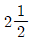
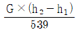
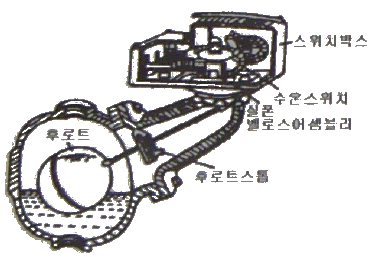
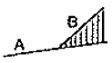
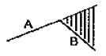
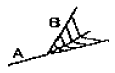
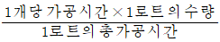
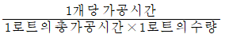
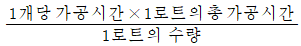
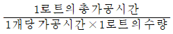

에너지관리기능장 (2007-07-15 기출문제)
1과목: 임의 구분
1. 보일러설치기술규격(KBI)상 단관식보일러의 특징을 설명한 것으로 틀린 것은?
- 관만으로 구성되어 기수드럼을 필요로 하지 않고 관을 자유로이 배치할 수 있다.
- 전열면적의 보유수량이 많아 기동에서 소요증기 발생까지의 시간이 길다.
- 부하변동에 의해 압력변동이 생기지 쉬워 응답이 빠르고 급수량 및 연료량의 자동제어 장치가 필요하다.
- 작고 가느다란 관내에서 급수의 전부 또는 거의가 증발되기 때문에 제대로 처리된 급수를 사용해야 한다.
(정답률: 74%)

2. 기체연료의 특징 설명으로 옳은 것은?
- 연소조절 및 점화, 소화가 용이하다.
- 자동제어가 곤란하다.
- 과잉공기가 많아야 완전 연소 된다.
- 누출시 폭발 위험성이 적다.
(정답률: 89%)
3. 보일러의 통풍장치에 사용되는 송풍기로 풍량을 2배로 얻기 위해서는 회전수를 몇 배로 하면 되는가?
- 2배
- 4배

배- 1/2배
(정답률: 71%)
4. 보일러 1마력에 상당하는 상당증발량은?
- 15.65 kgf/h
- 16.50 kgf/h
- 18.65 kgf/h
- 17.50 kgf/h
(정답률: 87%)
5. 실제 증발량 4 ton/h인 보일러의 효율이 85%이고, 급수온도가 40℃, 발생증기 엔탈피가 650 kcal/kg 이다. 이 보일러의 연료소비량은 약 얼마인가? (단, 연료의 저위발열량은 9800 kcal/kg 이다.)
- 360 kg/h
- 293 kg/h
- 250 kg/h
- 390 kg/h
(정답률: 64%)
6. 포화증기를 가열하여 온도를 올라가게 하는 장치는?
- 공기예열기
- 과열기
- 절탄기
- 중유가열장치
(정답률: 89%)
7. 다음 중 환산(상당)증발량의 산출식은? (단, G=실제증발량, h2=증기엔탈피, h1=급수엔탈피)

- G×539×(h2-h1)
- G×539×(h1-h2)
- G×(h2-h1)
(정답률: 83%)
8. 증기난방의 진공 환수식에 관한 설명으로 틀린 것은?
- 진공 펌프로 환수시킨다.
- 다른 방법보다 증기 회전이 빠르다.
- 환수관경으 커야만 한다.
- 방열기 설치장소에 제한을 받지 않는다.
(정답률: 74%)
9. 다음 설명 중 인젝터 급수불능 원인이 아닌 것은?
- 인젝터 자체 온도가 높을 때
- 증기 압력이 2kgf/cm2 이하 일 때
- 흡입 관로에서 공기가 누입 될 때
- 급수 온도가 낮을 때
(정답률: 74%)
10. 보일러설치기술규격(KBI)상 보일러의 압력계에 연결되는 증기관으로 황동관을 사용할 수 없는 증기 온도는 몇 ℃ 이상일 때인가?
- 100℃ 이상
- 150℃ 이상
- 210℃ 이상
- 273℃ 이상
(정답률: 89%)
11. 난방부하를 계산할 때 고려하지 않아도 좋은 것은?
- 벽체를 통과하는 열량
- 유리창을 통과하는 열량
- 창문 틈새 등의 환기로 인한 열량
- 전등과 같은 기기에 의한 열량
(정답률: 89%)
12. 보일러의 안전밸브 또는 압력릴리밸브에 요구되는 기능 설명으로 틀린 것은?
- 설정된 압력 이하에서 방출할 것
- 적절한 정지압력으로 닫힐 것
- 방출할 때는 규정의 리프트가 얻어질 것
- 밸브의 개폐동작이 안정적일 것
(정답률: 80%)
13. 그림은 보일러를 자동제어하기 위하여 사용되는 검출기이다. 그 제어대상은 무엇인가?

- 온도
- 압력
- 수위
- 연소상태
(정답률: 88%)
14. 탄소 2kg을 완전연소시키는데 필요한 이론공기량은?
- 5.3 Nm3
- 8.9 Nm3
- 10.7 Nm3
- 17.8 Nm3
(정답률: 64%)
15. 다음 난방방식의 분류 중 중앙식 난방이 아닌 것은?
- 직접난방
- 간접난방
- 방사난방
- 개별난방
(정답률: 74%)
16. 고온수 난방에서 2차측과 연결방법에 따라 분류한 것이다. 해당하지 않는 것은?
- 고온수 직결방식
- 캐스케이드방식
- 블리드인방식
- 열교환기방식
(정답률: 67%)
17. 보수유지관리기술규격(KRM)상 압력계의 정비시 주의사항으로 틀린 것은?
- 압력계 등은 양손으로 잡고 회전시켜 분리해서는 안된다.
- 압력계와 미터콕크는 나사삽입 연결의 가스켓으로 적정한 것을 사용한다.
- 압력계는 적어도 1년에 한번은 기준압력계와 비교검사를 한다.
- 사이폰관에는 부착전에 반드시 물이 없도록 한다.
(정답률: 83%)
18. 고온 가스의 처리가 간단하여 굴뚝 또는 배관 내에 장착하고 지름이 100μm인 입자의 집진에 이용되며 집진효율이 50~70%인 장치로 구조가 간단한 함진 가스의 집진장치는?
- 중력식 집진장치
- 원심력식 집진장치
- 관성력식 집진장치
- 여과식 집진장치
(정답률: 75%)
19. 다음 중 송풍기의 종류가 아닌 것은?
- 터보형
- 다익형
- 플레이트형
- 플랜저형
(정답률: 74%)
20. 액체연료의 연소장치 중 분무식 버너에 속하지 않는 것은?
- 유압식 버너
- 회전식 버너
- 포트형 버너
- 기류식 버너
(정답률: 56%)
2과목: 임의 구분
21. 보일러 연소량을 일정하게 하고 과잉열을 물에 저장하므로 과부하시에는 증기를 방출하여 증기부족을 보충시키는 장치는?
- 공기예열기
- 축열기
- 절탄기
- 과열기
(정답률: 81%)
22. 대류형 발열기로서 강판재 케이싱 속에 튜브 등의 가열기를 설치한 것으로 공기는 하부로 유입되어 가열되고 상부로 투출되어 자연 대류에 의해 난방하는 방열기는?
- 주형방열기
- 길드방열기
- 벽걸이방열기
- 콘벡터
(정답률: 75%)
23. 복사난방의 특징을 설명한 것으로 틀린 것은?
- 방열기의 설치가 불필요하여 바닥면의 이용도가 높다.
- 실내 평균온도가 높아 손실열량이 크다.
- 건물 구조체에 매입 배관을 시공 및 고장수리가 어렵다.
- 예열시간이 많이 걸려 일시적 난방에는 부적당하다.
(정답률: 85%)
24. 보일러사용기술규격(KBO)상 보일러수 속의 유지류, 용해 고형물, 부유물 등의 농도가 높아지면 드럼 수면에 안정한 거품이 발생하고, 또한 거품이 증가하여 드럼의 기실에 전체로 확대되는 현상은?
- 점식
- 포밍
- 파열
- 캐비테이션
(정답률: 90%)
25. 보일러사용기술규격(KBO)에 규정한 보일러의 건조보존법에서 질소가스를 사용할 때 보존 압력은?
- 0.03 MPa
- 0.06 MPa
- 0.12 MPa
- 0.15 MPa
(정답률: 86%)
26. 보일러 용수의 처리방법 중 보일러 외처리 방법이 아닌 것은?
- 여과법
- 폭기법
- 청관제 사용법
- 증류법
(정답률: 63%)
27. 보일러수에 청관제를 사용하는 목적이 아닌 것은?
- 고착 스케일 제거
- 기포방지
- 가성취화 억제
- pH, 알칼리도 조정
(정답률: 74%)
28. 불완전 연소의 원인과 가장 거리가 먼 것은?
- 연료유의 분무 입자가 크다.
- 연료유의 연소용 공기의 혼합이 불량하다.
- 연소용 공기량이 부족하다.
- 연소용 공기를 예열하였다.
(정답률: 93%)
29. 보일러 부식의 원인 중 외면부식 발생 원인이 것은?
- 보일러 급수의 수질
- 보일러의 pH 조정 불량
- 용존 산소에 의한 부식
- 연료 중 바나듐, 유황 성분
(정답률: 84%)
30. 보일러 내면에 발생하는 점식(pitting)의 방지법이 아닌 것은?
- 용존 산소를 제거한다.
- 아연판을 매단다.
- 내면에 도료를 칠한다.
- 브리딩 스페이스를 크게 한다.
(정답률: 88%)
31. 보일러의 노통이나 화살과 같은 원통이 과열이나 휨에 의해 외압을 견뎌내지 못하고 찌그러지는 현상은?
- 팽출
- 브리스터
- 그루빙
- 압궤
(정답률: 90%)
32. 보일러 수리작업시 사용되는 공구에 대한 취급상 안전사항으로 틀린 것은?
- 수동용 오스터 사용시 절삭유를 충분히 공급하고 무리한 힘을 가하지 않는다.
- 토치 램프를 사용하기 전에는 근처에 인화물질이 없는가 확인한다.
- 해머작업시에는 반드시 장갑을 끼고 작업한다.
- 드라이버는 홈에 맞는 것을 사용하며 이가 상한 것은 사용하지 않는다.
(정답률: 89%)
33. 부력(浮力)은 그 물체가 배제한 유체의 중량과 같은 힘을 수직 상방으로 받는 것을 말하는데 이는 어떤 원리인가?
- 아르키메데스
- 파스칼
- 뉴톤
- 오일러
(정답률: 81%)
34. 벤투리(venturi)계로는 유체의 무엇을 측정하는가?
- 속도
- 유량
- 온도
- 마찰
(정답률: 85%)
35. 관마찰계수가 일정할 때 배관속을 흐르는 유체의 손실수도에 관한 설명으로 옳은 것은?
- 유속에 비례한다.
- 유속의 제곱에 비례한다.
- 관 길이에 반비례한다.
- 유속의 3승에 비례한다.
(정답률: 85%)
36. 0℃일 때 2.5m인 강철제 레일이 온도가 40℃가 되면 늘어가는 길이는? (단, 강철의 선팽창계수는 1.1×10-5/℃ 이다.)
- 0.011 cm
- 0.11 cm
- 1.1 cm
- 1.75 cm
(정답률: 76%)
37. 125℃에서 물 1kg이 증발할 때 엔트로피 변화는 몇 kcal/kg·K 인가? (단, 125℃ 물의 증발 잠열은 522.6 kcal/kg 이다.)
- 1.131
- 1.222
- 1.313
- 1.422
(정답률: 66%)
38. 대류(對流)열전달 방식을 2가지로 올바르게 구분한 것은?
- 자유대류와 복사대류
- 강제대류와 자연대류
- 열판대류와 전도대류
- 교환대류와 강제대류
(정답률: 89%)
39. 에너지 보존의 법칙을 올바르게 나타낸 것은?
- 에너지의 형태는 변화하지 않는다.
- 열은 일로 변화 시킬 수 있고, 반대로 일은 열로 변화시킬 수 있다.
- 계의 에너지는 감소한다.
- 계의 에너지는 증가한다.
(정답률: 86%)
40. 증기의 건도를 향상시키는 방법으로 틀린 것은?
- 증기주관 내의 드레인을 제거한다.
- 기수분리기를 사용하여 수분을 제거한다.
- 고압증기를 저압으로 감압시킨다.
- 과열저감기를 사용하여 건도를 향상시킨다.
(정답률: 62%)
3과목: 임의 구분
41. 고압배관용 탄소강관의 KS 표시 기호는?
- SPPH
- SPPS
- SPHT
- SPLT
(정답률: 79%)
42. 보일러 급수배관 등에 사용되느 밸브로서 유량 조절용으로는 부적합하며, 밸브를 완전히 열거나 완전히 잠그는 용도가 사용되는 밸브는?
- 체크 밸브
- 글로브 밸브
- 슬루스 밸브
- 앵글 밸브
(정답률: 74%)
43. 일반적인 배관작업용 쇠톱의 인치당 산수에 따른 재질별 사용용도를 분류한 것으로 잘못된 것은?
- 14산 – 주철, 동합금
- 18산 – 경강, 탄소강
- 24산 – 동, 납
- 32산 – 박판, 소결합금강
(정답률: 67%)
44. 루프형 신축 이음의 굽힘 반경은 사용되는 관지름의 몇 배 이상으로 하여야 하는가?
- 3배
- 4배
- 5배
- 6배
(정답률: 61%)
45. 펌프에서 발생하는 진동을 억제하는데 필요한 배관 지지구는?
- 행거
- 레스트레인트
- 브레이스
- 서포트
(정답률: 91%)
46. 온수난방 시공시 각 방열기에 공급되는 유량분배를 균등하게 전후방 방열기의 온도차를 최소화하는 방식은?
- 역귀환방식
- 직접귀환방식
- 단관식
- 중력순환식
(정답률: 95%)
47. 연강의 용접 등에서 용융철의 미립자가 용융지나 심선의 이행금속에서 비산 하는 것은?
- 자기 쏠림(mangetic blow)
- 핀치 효과(pinch effect)
- 굴하 작용(digging action)
- 스패터(spatter)
(정답률: 88%)
48. 보기와 같은 배관라인의 정투영도(평면도)를 입체적인 등각도로 표시한 것으로 다음 중 가장 적합한 것은?




(정답률: 81%)
49. 파이프의 설명으로 적합하지 않는 것은?
- 호칭경은 일정한 등분으로 나뉘어 있다.
- 관이음의 부품들도 호칭경으로 표시된다.
- 관이음의 부품들은 국제적으로 표준화되어 있다.
- 호칭경이 없이 외경으로 관경을 표시한다.
(정답률: 91%)
50. 보온재가 갖추어야 할 조건으로 틀린 것은?
- 흡수성이 적을 것
- 부피, 비중이 작을 것
- 열전도율이 클 것
- 물리적 화학적 강도가 클 것
(정답률: 93%)
51. 적색 안료에 사용되고 연단을 아마인유와 혼합하여 만들며 녹을 방지하기 위해 페인트 밑칠 및 다른 착색도료의 초벽으로 우수하여 기계류의 도장 밑칠에 널리 사용되는 것은?
- 수성 페인트
- 광면단 도료
- 합성수지 도료
- 알루미늄 페인트
(정답률: 96%)
52. 열사용기자재관리규칙에 의한 인정 검사대상기기 조종자의 교육을 이수한 자가 조종할 수 없는 기기는?
- 증기보일러로서 최고사용압력이 1 MPa 이하인 것
- 증기보일러의 전열면적이 15m2 이하인 것
- 온수를 발생하는 오일용 보일러로서 출력이 0.58 MW 이하인 것
- 압력용기
(정답률: 50%)
53. 다음 중 에너지 이용 합리화법상 열사용 기자재에 해당하는 것은?
- 압력용기
- 안전밸브
- 열풍기
- 내화물
(정답률: 70%)
54. 에너지이용합리화법시행령에 규정된 산업자원부장관 또는 시·도지사가 에너지관리공단에게 위탁하지 않은 업무는?
- 효율관리 기자재에 대한 측정결과 통보의 접수
- 에너지사용계획 검토
- 에너지절약 전문기업의 등록
- 국가에너지 기본계획의 수립
(정답률: 74%)
55. 이항분포(Binomial distrihution)의 특징으로 가장 옳은 것은?
- P=0 일 때는 평균치에 대하여 좌·우 대칭이다.
- P≤0.1 이고, nP=0.1~10 일 때는 포아송 분포에 근사한다.
- 부적합품의 출현 개수에 대한 표준편차는 D(x)=nP 이다.
- P≤0.5 이고, nP≥5 일 때는 포아송 분포에 근사한다.
(정답률: 77%)
56. 연간 소요량 4000개인 어떤 부품의 발주비용은 매회 200원이며, 부품단가는 100원, 연간 재고유지비율이 10% 일 때, F.W.Harris식에 의한 경제적 주문량은 얼마인가?
- 40개/회
- 400개/회
- 1000개/회
- 1300개/회
(정답률: 73%)
57. 제품공정 분석표(Product Process Chart) 작성시 가공시간 기입법으로 가장 올바른 것은?




(정답률: 74%)
58. 다음 중 검사를 판정의 대상에 의한 분류가 아닌 것은?
- 관리 샘플링 검사
- 로트별 샘플링 검사
- 전수검사
- 출하검사
(정답률: 87%)
59. “무결점 운동” 이라고 불리우는 것으로 품질개선을 위한 동기부여 프로그램은 어느 것인가?
- TQC
- ZD
- MIL-STD
- ISO
(정답률: 94%)
60. M타입의 자동차 또는 LCD TV를 조립, 완성한 후 부적합수(결점수)를 점검한 데이터에는 어떤 관리도를 사용하는가?
- P 관리도
- nP 관리도
- c 관리도
 관리도
관리도
(정답률: 60%)